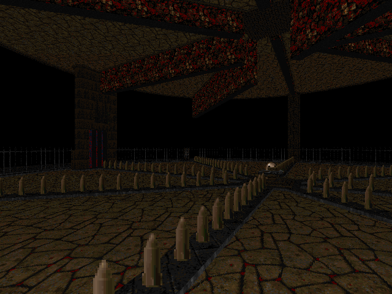

DOWNLOAD LINKS


| Year | 2023 |
| IWAD | Doom II |
| Source port | Boom/UMAPINFO-compatible |
| Game mode(s) | Single-player |
| Map(s) contributed | MAP20 |
PUSS XX: Hell Yeah! is the 20th entry in the Pineapple Under the Sea speedmapping series. The themes for this edition
were essentially reprised from past PUSS events and mappers were free to use as many or few of them as they pleased. Among said
themes were stuff such as 13 monsters, no hitscanners, beach maps etc., each one a reference to a previous PUSS. The final product
contains an impressive 63 one-hour speedmaps from long-time PUSS contributors and new entrants alike.
My submission for PUSS20 is MAP20, "Skulls 'n' Blades", a small arena-style blastfest housing Arachnotrons, Revenants and a Cyberdemon.
In addition to projectiles from the enemies, the player has to avoid guillotine-like crushers that occasionally close off parts of the
circular arena. As far as exiting the map, there are shootable switches around the perimeter that, upon being all activated, unlock the
exit.